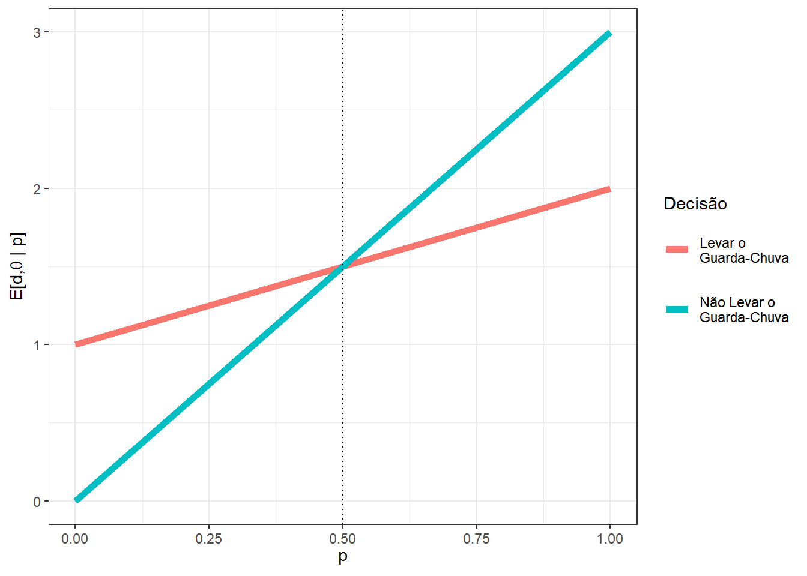

4 Introdução à Teoria da Decisão
A teoria da decisão é uma das possíveis formas de embasar a inferência bayesiana. Sob essa abordagem, considera-se uma função de perda (ou função de utilidade) que quantifica numericamente as consequências de sua decisão para um dado valor do parâmetro. Essa quantificação de “preferência” é novamente subjetiva e é possível fazer uma construção de função de perda similar ao que fizemos com probabilidade. Ou seja, dado um conjunto de suposições, existe uma função de perda que representa numericamente suas preferências para cada decisão e cada possível valor do parâmetro. Essa construção não será feita aqui mas pode ser encontrada no livro Optimal Statistical Decisions (DeGroot 1970).
\(~\)
4.1 Conceitos Básicos
\(d \in \mathcal{D}:\) decisão - uma particular afirmação, por exemplo, sobre \(\theta\). No contexto inferencial, uma decisão pode ser uma estimativa (pontual ou intervalar) para \(\theta\) ou a escolha de uma hipótese específica em um teste de hipóteses.
\(\mathcal{D}:\) espaço de decisões - conjunto de todas as possíveis decisões (afirmações).
\(\theta\): estado da natureza - quantidade desconhecida ou parâmetro, no contexto de inferência estatística.
\(\Theta\): espaço dos estados da natureza - espaço paramétrico.
\(L:\mathcal{D}\times\Theta\longrightarrow\mathbb{R}\): função de perda - \(L(d,\theta)\) que representa o prejuízo de uma decisão \(d\) quando o estado da natureza é \(\theta\).
\(~\)
Exemplo 1. Suponha que você está saindo de casa pela manhã e precisa tomar uma importante decisão: levar ou não seu guarda-chuva.
\(\mathcal{D}=\{G,G^c\}\) , onde \(G:\) levar guarda-chuva.
\(\Theta=\{C,C^c\}\) , onde \(C:\) chuva.
Suponha que carregar o guarda-chuva é algo que não lhe agrada mas, por outro lado, você odeia ficar molhado e acredita que a pior situação seria não levá-lo e tomar chuva. Você ficará incomodado se levar o guarda-chuva e chover pois, além de tê-lo carregado, voltou para casa com os sapatos molhados. Note que, nessas circunstâncias, o cenário preferido por você seria não levar o guarda-chuva e não chover.
Para quantificar suas preferências, considere uma função de perda \(L:\mathcal{D}\times\Theta\longrightarrow\mathbb{R}\), de modo que, quanto mais algum cenário lhe gera incômodo, maior sua perda. Um exemplo é apresentado a seguir.
| Estados da Natureza | ||
|---|---|---|
| Decisão | \(C\) | \(C^c\) |
| \(G\) | 2 (ruim) | 1 (bom) |
| \(G^c\) | 3 (pior) | 0 (melhor) |
| \(P(\theta)\) | p | 1-p |
Uma possível maneira de tomar uma decisão é escolher a decisão “menos prejudicial.” Se levar o Guarda chuva, no pior caso, sua perda é \(\displaystyle \max_\theta L(G,\theta)=2\) e, se não levá-lo, a maior perda possível é \(\displaystyle \max_\theta L(G^c,\theta)=3\). Assim, a decisão que tem a menor dentre as maiores perdas é levar o guarda-chuva. Esse procedimento para tomada de decisões é chamado min-max e consiste em escolher a decisão \(d'\) tal que \(d' = \displaystyle \underset{d}{\text{argmin}} \max_\theta L(d,\theta)\).
Sendo um pouco mais otimista, você pode escolher a decisão que tenha a maior dentre as menores perdas. Esse procedimento é chamado max-min e consiste em escolher a decisão \(d' = \displaystyle \underset{d}{\text{argmax}} \min_\theta L(d,\theta)\). No nosso exemplo, esse procedimento também sugere que você sempre carregue o guarda-chuvas.
Note que a decisão escolhida pelos dois procedimentos descritos anteriormente sugere que você sempre deve carregar o guarda-chuvas. Contudo, isso pode não ser razoável. Imagine que você estava lendo notícias antes de sair de casa e viu que a probabilidade de chuva era \(0.01\). Nesse caso, não parece fazer sentido você levar o guarda-chuva, já que isso vai te trazer um desconforto e a chance de chover é muito baixa. Assim, a probabilidade de chover deveria ser levada em consideração em sua tomada de decisão.
Uma maneira de fazer isso é utilizar a perda esperada. Note que \(\theta\) é uma quantidade desconhecida e, pelo que já foi discutido anteriormente, você deve descrever sua incerteza em relação a essa quantidade em termos de probabilidade. Suponha que no exemplo \(P(C)=p\), \(0\leq p\leq 1\).
\(~\)
Para cada decisão \(d \in \mathcal{D}\), é possível calcular o valor esperado da função de perda (perda esperada ou risco da decisão \(d\) contra a priori \(P\)) \[\rho(d,P) = E\left[L(d,\theta) ~|~ P\right] = \int_{\Theta} L(\theta) dP(\theta).\] \(~\)
No exemplo, temos
\(E\left[L(G^{},\theta)\right]\) \(=L(G,C)P(C) + L(G,C^c)P(C^c)\) \(=2p+1(1-p)\) \(=p+1\);
\(E\left[L(G^c,\theta)\right]\) \(=L(G^c,C)P(C) + L(G^c,C^c)P(C^c)\) \(=3p+0(1-p)\) \(=3p\).
Deste modo, as perdas esperadas associadas a cada decisão dependem da probabilidade de chuva \(p\). Assim, para cada possível valor de \(p\), deve-se tomar a decisão que tem menor perda esperada. Por exemplo, se a probabilidade de chuva é \(p=0.1\), temos que as perdas esperadas para as decisões de levar ou não o guarda-chuva são, respectivamente, \(E\left[L(G,\theta)\right]=1.1\) e \(E\left[L(G^c,\theta)\right]=0.3\). Assim, sob essa abordagem, sua decisão seria de não levar o guarda-chuva nesse caso. Por outro lado, se a probabilidade de chuva for \(p=0.9\), suas perdas esperadas seriam respectivamente \(E\left[L(G,\theta)\right]=1.9\) e \(E\left[L(G^c,\theta)\right]=2.7\), de modo que a decisão ótima seria levar o guarda-chuva. O gráfico a seguir apresenta as perdas para cada decisão \(d\) e para cada valor de \(p\). É possível notar que a decisão ótima é levar o guarda-chuva quando \(p>0.5\) e não levá-lo caso contrário.

\(~\)
Vamos denotar por \(\rho^*\) o risco de bayes, isto é, a perda esperada da decisão de Bayes (ou decisão ótima) \(d^*\in \mathcal{D}\) tal que \(\rho^*(P)\) \(=\rho(d^*,P)\) \(=\underset{d\in\mathcal{D}}{min}~\rho(d,P)\).
\(~\)
Para uma argumentação mais formal sobre a escolha pela decisão que minimiza a perda esperada, ver Optimal Statistical Decisions (DeGroot, M.H.).
\(~\)
\(~\)
- Vamos denotar um problema de decisão por \(\left(\Theta, \mathcal{D}, L, P\right)\), onde \(\Theta\) é o espaço paramétrico, \(\mathcal{D}\) é o espaço de decisões, \(L: \mathcal{D} \times \Theta \longrightarrow \mathbb{R}\) é uma função de perda e \(P\) é a distribuição de probabilidade que representa sua crença sobre a quantidade desconhecida \(\theta\). Equivalentemente, a função de perda \(L\) pode ser substituída por uma função de utilidade \(U\) (por exemplo, tome \(U=-L\)).
\(~\)
- A solução para um problema de decisão \(\left(\Theta, \mathcal{D}, L, P\right)\) é a decisão de Bayes, \({d}^* \in \mathcal{D}\), tal que \(\rho^*(P) = \rho({d}^*,P) = \displaystyle \inf_{d \in \mathcal{D}} \rho(d,\theta)\), com \(\rho(d,P) = \displaystyle \int_\Theta L(d,\theta)dP(\theta)\).
\(~\)
4.2 Aleatorização e Decisões Mistas
Seja \(D=\left\{d_1,d_2,\ldots\right\}\) um espaço de decisões e considere \(\mathcal{M}\) o conjunto de todas as decisões mistas (ou aleatorizadas), isto é, para toda distribuição de probabilidades \(Q=\left\{q_1,q_2,\ldots\right\}\), uma decisão \(d\in\mathcal{M}\) se \(d\) consiste em escolher a decisão \(d_i\) com probabilidade \(q_i\).
Assim, a perda associada à uma decisão \(d\in\mathcal{M}\) é \(L(d,\theta) = \sum q_i L(d_i,\theta)\) e o risco dessa decisão é
\(\rho(d,P)\) \(= \displaystyle \int_\Theta L(d,\theta) dP(\theta)\) \(=\displaystyle \int_\Theta \sum q_i L(d_i,\theta) dP(\theta)\) \(=\displaystyle \sum q_i \int_\Theta L(d_i,\theta) dP(\theta)\) \(=\displaystyle \sum q_i~ \rho(d_i,\theta)\).
Considere a decisão \({d}^* \in \mathcal{D}\) tal que \(\rho({d}^*,P) = \displaystyle \inf_{d \in \mathcal{D}} \rho(d,\theta)\).
Então, \(\forall ~d \in \mathcal{M}\),
\(\rho(d,P)\) \(=\displaystyle \sum q_i~ \rho(d_i,\theta)\) \(\geq \displaystyle \sum q_i~ \rho({d}^*,\theta)\).
- Em palavras, para toda decisão aleatorizada \(d\in\mathcal{M}\), existe uma decisão não aleatorizada \({d}^*\in\mathcal{D} \subset\mathcal{M}\), tal que \(\rho({d}^*,P) \leq \rho(d,P)\).
\(~\)
4.3 Problemas com Dados
Suponha que antes de escolher uma decisão \(d \in \mathcal{D}\), é possível observar um v.a. \(\boldsymbol X\) que (supostamente) está relacionado com \(\theta\) (isto é, \(\boldsymbol X\) traz alguma informação sobre \(\theta\)).
Desde modo, considere a família \(\mathcal{P}=\left\{ f(\cdot|\theta) : \theta \in \Theta\right\}\) de funções de distribuição condicionais para \(\boldsymbol X\), isto é, para cada \(\theta \in \Theta\) é possível determinar a distribuição condicional de \(\boldsymbol X|\theta\). Essa distribuição, juntamente com a distribuição a priori \(f(\theta)\), determina totalmente uma distribuição conjunta \(f(\boldsymbol x,\theta) = f(\boldsymbol x|\theta) f(\theta)\).
Pode-se definir uma função de decisão \(\delta: \mathfrak{X} \longrightarrow \mathcal{D}\) que associa a cada resultado experimental \(\boldsymbol x \in \mathfrak{X}\) uma decisão \(d \in \mathcal{D}\). Denote o conjunto de todas as possíveis funções de decisão por \(\Delta\).
O risco \(r(\delta,P)\) da função de decisão \(\delta \in \Delta\) é dado por \(r(\delta,P)\) \(=E\left[L\left(\delta,\theta\right)\right]\) \(=\displaystyle \int_\Theta \int_{\mathfrak{X}} L\left(\delta(\boldsymbol x),\theta\right) dP(\boldsymbol x,\theta)\).
A função de decisão de Bayes, \({\delta}^* \in \Delta\), é tal que \({\rho}^*(P)\) \(=\rho({\delta}^*,P)\) \(=\displaystyle \inf_{\delta\in \Delta} \rho(\delta,P)\).
\(~\)
Exemplo 1. Seja \(\Theta=\{\theta_1,\theta_2\}\), \(\mathcal{D}=\{d_1,d_2\}\), \(X|\theta_1\sim Ber(3/4)\), \(X|\theta_2 \sim Ber(1/3)\), \(\mathfrak{X}=\{0,1\}\) e, a priori, \(P(\theta=3/4)=P(\theta=1/3)=1/2\). Considere a função de perda a seguir.
| L | \(\theta_1\) | \(\theta_2\) |
|---|---|---|
| \(d_1\) | 0 | 5 |
| \(d_2\) | 10 | 0 |
Temos que \(|\Delta| = 2^2=4\), de modo que as possíveis funções de decisão são
\(\delta_1(x)=\left\{\begin{array}{lr} d_1, & x=1\\ d_2, &x=0\end{array}\right.\)
\(\delta_2(x)=\left\{\begin{array}{lr} d_1, & x=0\\ d_2, &x=1\end{array}\right.\)
\(\delta_3(x)=d_1\) e \(\delta_4(x)=d_2\).
Para a função \(\delta_1\), temos
| x | \(\theta\) | \(L(\delta_1(x),\theta)\) | \(P(x|\theta)\) | \(P(\theta)\) | \(P(x,\theta)\) |
|---|---|---|---|---|---|
| 0 | \(\theta_1\) | 10 | 1/4 | 1/2 | 1/8 |
| 0 | \(\theta_2\) | 0 | 2/3 | 1/2 | 2/6 |
| 1 | \(\theta_1\) | 0 | 3/4 | 1/2 | 3/8 |
| 1 | \(\theta_2\) | 5 | 1/3 | 1/2 | 1/6 |
\(\rho(\delta_1)\) \(=\displaystyle \sum_{x=0}^1\sum_{i=1}^2L(\delta_1(x),\theta_i)\underbrace{P(X=x|\theta_i)P(\theta_i)}_{P(x,\theta)}\) \(=10~\dfrac{1}{8}+5~\dfrac{1}{6}\) \(=\dfrac{50}{24}\)
De forma análoga, \(~\rho(\delta_2,P)=130/24\) , \(~\rho(\delta_3,P)=60/24\) , \(~\rho(\delta_4,P)=120/24\) , e, assim.
\({\delta}^*(x)={\delta}^*_1(x)=\left\{\begin{array}{rl} d_1, & x=1\\ d_2, & x=0\end{array}\right.\)
Risco de Bayes: \(\rho^*(P)=\rho({\delta}^*,P)=50/24\).
\(~\)
Em problemas mais complicados, pode ser muito trabalhoso (ou impossível) obter a função de decisão dessa forma, chamada forma normal. Sob essa abordagem, é necessário encontrar a função de decisão de bayes \({\delta}^*\) dentre todas as possíveis funções de decisão. Nesses casos, pode ser mais fácil resolver o problema usando a forma extensiva em que, para cada \(\boldsymbol x \in \mathfrak{X}\), obtem-se a decisão de Bayes \({d}_{x}^*\) que minimiza o risco posterior, definido por \(r_x(d)\) \(= \displaystyle \int_\Theta L(d,\theta) dP(\theta|\boldsymbol x)\).
Assim, é posível obter uma decisão de Bayes \({d}_x^*\) para um específico ponto \(x\) observado ou, ainda, construir uma função de decisão de Bayes, fazendo \(~{\delta}^*(\boldsymbol x) = {d}_x^*~\) para cada \(\boldsymbol x \in \mathfrak{X}\). A seguir, é mostrado que essa duas formas produzem resultados que minimizam o risco. Note que
\(r(\delta,P)\) \(=E\left[L\left(\delta,\theta\right)\right]\) \(=\displaystyle \int_\Theta \int_{\mathfrak{X}} L\left(\delta(\boldsymbol x),\theta\right) dP(\boldsymbol x,\theta)\) \(=\displaystyle \int_\Theta \int_{\mathfrak{X}} L\left(\delta(\boldsymbol x),\theta\right) dP(\boldsymbol x|\theta)dP(\theta)\) \(=\displaystyle \int_{\mathfrak{X}} \left[ \underbrace{\int_\Theta L\left(\delta(\boldsymbol x),\theta\right) dP(\theta|\boldsymbol x)}_{r_x\left(\delta(\boldsymbol x)\right)} \right]dP(\boldsymbol x)\).
Note que a integral interna (em \(\theta\)) pode ser resolvida para cada \(\boldsymbol x\) fixado. Para cada \(\boldsymbol x\), considere a decisão \({d}_x^*\) tal que \(r_x\left({d}_x^*\right)\) \(=\displaystyle \inf_{d \in \mathcal{D}} r_x(d)\). Assim
\(r(\delta,P)\) \(=\displaystyle \int_{\mathfrak{X}} \left[ \underbrace{\int_\Theta L\left(\delta(\boldsymbol x),\theta\right) dP(\theta|\boldsymbol x)}_{r_x\left(\delta(\boldsymbol x)\right)} \right]dP(\boldsymbol x)\) \(=\displaystyle \int_{\mathfrak{X}} \left[ {r_x\left(\delta(\boldsymbol x)\right)} \right]dP(\boldsymbol x)\) \(\geq \displaystyle \int_{\mathfrak{X}} \left[ {r_x\left({d}_x^*\right)} \right]dP(\boldsymbol x)\) \(= \displaystyle \int_{\mathfrak{X}} \left[ {r_x\left({d}_x^*\right)} \right]dP(\boldsymbol x)\).
Assim, a função \({\delta}^*(x)={d}^*_{x}\) é uma função de decisão de Bayes.
\(~\)
No Exemplo 1 \(~X|\theta_1 \sim Ber(3/4)\) , \(~X|\theta_2 \sim Ber(1/3)\) e \(~P(\theta_1)=P(\theta_2)=1/2\).
\(P(\theta_1|x=0)\) \(=\dfrac{P(X=0|\theta_1)P(\theta_1)}{P(X=0|\theta_1)P(\theta_1)+P(X=0|\theta_2)P(\theta_2)}\) \(=\dfrac{\frac{1}{4}~\frac{1}{2}}{\frac{1}{4}~\frac{1}{2}+\frac{2}{3}~\frac{1}{2}}\) \(=\dfrac{3}{11}\)
\(P(\theta_2|X=0)\) \(=\dfrac{8}{11}\)
\(r_x(d_1,P)\) \(=\displaystyle \sum_{i=1}^2L(d_1,\theta_i)P(\theta_i|X=0)\) \(=0~P(\theta_1|X=0)+10~P(\theta_2|X=0)\) \(=\dfrac{80}{11}\)
\(r_x(d_2,P)\) \(=5~P(\theta_1|X=0)+0~P(\theta_2|X=0)\) \(=\dfrac{15}{11}\)
Logo, para \(x=0\), \({d}_0^*={d}_2\). De forma análoga, para \(x=1\), \({d}_1^*={d}_2\) e, assim,
\({\delta}^*(x)=\left\{\begin{array}{rl} {d}_2, & x=0\\ {d}_1, & x=1~.\end{array}\right.\)
\(~\)